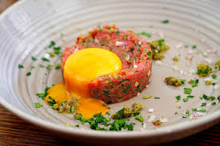

Steak Tartare

Quick, Easy & Simple
Ingredients
- Beef (Sirloin) - 250g
- shallots - 1 small
- Capers - 30g
- Girkin - 30g
- Egg yolk - 1
- Tabasco - To taste
- Woerstershire Sauce - To taste
Optional
- Dijon mustard - 2/4 Teaspoon
- Fresh coriander
- chilli flakes - 1/4 Teaspoon
Method
- Cut the beef very thinly using a very sharp knife
- Slice the shallots, cappers & girkins
- Mix all cute Ingredients together
- place the yolk on top